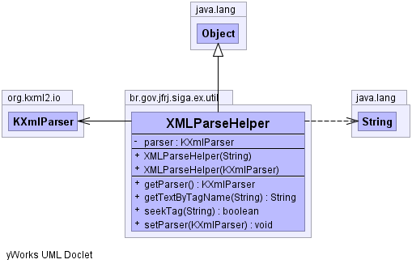

br.gov.jfrj.siga.ex.util
Class XMLParseHelper
java.lang.Object
 br.gov.jfrj.siga.ex.util.XMLParseHelper
br.gov.jfrj.siga.ex.util.XMLParseHelper
public class XMLParseHelper
- extends java.lang.Object
-
-

|
Field Summary |
private org.kxml2.io.KXmlParser |
parser
|
| Methods inherited from class java.lang.Object |
clone, equals, finalize, getClass, hashCode, notify, notifyAll, toString, wait, wait, wait |
parser
private org.kxml2.io.KXmlParser parser
XMLParseHelper
public XMLParseHelper(org.kxml2.io.KXmlParser parser)
XMLParseHelper
public XMLParseHelper(java.lang.String conteudo)
getParser
public org.kxml2.io.KXmlParser getParser()
setParser
public void setParser(org.kxml2.io.KXmlParser parser)
seekTag
public boolean seekTag(java.lang.String name)
getTextByTagName
public java.lang.String getTextByTagName(java.lang.String tagName)